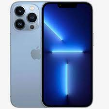
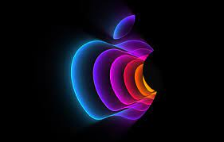
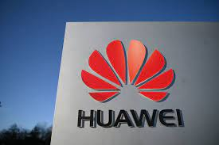
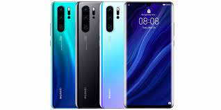

Samsung – група компаній, заснована в 1938 році в південній Кореї. На світовому ринку відома як виробник побутової техніки,
електроніки та компонентів. Серед напрямків діяльності Samsung – електроніка, кораблебудування, фінанси, хімія, індустрія розваг
та навіть авіабудування.


колишня Apple Computer, Inc.) — американська технологічна компанія з офісом у Купертіно (Каліфорнія), яка проєктує та
розробляє побутову електроніку, програмне забезпечення й онлайн-сервіси. Є першою американською компанією, чия капіталізація
перевершила 1 трлн доларів США.
Все почалося в далеких 1970-их. Як і більшість інших стартапів, історія Apple створювалася в гаражі двома шкільними друзями
— Стівом Джобсом і Стівом Возняком, і спеціалізувалася на складанні комп'ютерів. Вони зуміли продати кілька десятків таких пристроїв,
що послужило для офіційного заснування компанії Пропозиції 1 квітня 1976 року під назвою Apple Computer Inc.


Huawei Technologies Co. Ltd. — одна з найбільших компаній КНР у сфері телекомунікацій. Заснована у 1987 році. У 2006 році у
компанії працювало близько 83 тисяч робітників.